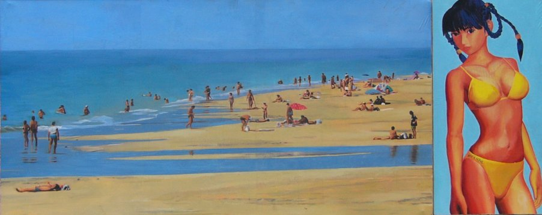

[TOP] Jose Quesada, Beach (2000) 120 x 42 cm, 47 x 16.5 inch. Oil on canvas
The virtual girl (from the videogame "dead or alive") stares nonchalantly towards a spanish beach. The contrast between her perfect, designed body and the mundane images of fat ladies under horrible umbrellas spreading lotion over their voluminous bodies is striking. The whole composition takes the attention of the espectator to the right, but the gaze of the girl returns it to the center.